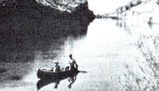

With the increase in gasoline prices, it would probably be impossible to repeat Jay and Sonja's trip for the same money, but their advice could encourage you to plan your own inexpensive adventure.
"First of all," they write, "be economy minded. Stay in national forests whenever possible, for example. Such areas can be used either free of charge or at a cost of only a dollar or two a night. Furthermore, they provide more peace; quiet, and privacy than do most of the commercial outfits. We heartily recommend the George Washington National Forest in Virginia, which offers easy access to Shenandoah National Park and the Skyline Drive ... and the Ouachita National Forest, which straddles the Arkansas-Oklahoma border.
"Of course, we love the natural beauty of our national parks, too, but the 'apartmentstyle camping' in their regulated grounds can wear a bit thin. If you think, however, that you will be visiting these areas. go ahead and invest $10 in a Golden Eagle Passport. It'll let you and accompanying family members into the parks at no charge (though it does not cover camping fees). . and will also give you free admission to monuments and recreation areas administered by the federal government. (Our permit more than paid for itself!)
"if you're 62 years of age or older, you are eligible for a Golden Age Passport: a free lifetime entrance permit to federal parks, monuments, and recreation areas, which also provides a 50% discount on federal use fees charged for facilities and services such as camping, boat launching, and parking. (Both passports are available from regional Department of Interior offices or at park entrances.)
"Furthermore, staying in national parks does have one advantage over national forest camping ... most of them nave showers! (Feeling clean after three days on the road is a true luxury!) But, when driving in a dry climate like New Mexico's, try simply wetting a facecloth and dangling it outside the window for a moment . . . the rapid evaporation will turn the terry ice cold for a quick, refreshing wash. At night, using jugged water (be sure to have a minimum of three gallons with you at all times), we often treated each other to mini-showers. Within moments, the liquid was giving us goose bumps, and we felt completely rejuvenated!
"We also found it handy to pack along a stove (ours is propane) and lots of trash bags. The danger of forest fire in places like the Kaibab National Forest, which surrounds the Grand Canyon, is so extreme that campfires are not permitted . . . and the little cooker provided us with many a hot meal. As for the bags, we probably used more of them for other folks' garbage than for our own. You'll likely find that you do, too!
"A driving trip can help remind one of just how vast the United States really is. We were on the road for two solid months and saw only a tiny-albeit wonderful-sample of America. On our next excursion, we intend to spend more time in a smaller area."
In order to get a more in-depth look at specific scenic attractions on this continent, you might also consider becoming a member of the University of the Wilderness. Incorporated in 1973; by a group of concerned nature lovers. the university is a non-profit, nondiscriminatory, adult educational organization. Its current catalog offers field trips and workshops in the wilds of the Virgin Islands, Alaska, several western states. and Canada.
One can select from 31 wilderness backpack, canoe, raft; or base-camp trips ten wilderness photography workshops . . . two wilderness writing workshops . . . and one wilderness politics course offering college-level credit. The university's average seven-day field-trip fee is $350, which includes meals, a tent, and local transportation. The workshop fees start at $465.
A charter membership (which will be available until December 31. 1981) in this "wilderness travel co-op" is $25 .. and members who participate in the expeditions will receive an annual dividend from surplus trip funds.
For a free catalog with additional in-3 formation, write University of the Wilderness, Dept TMEN, P.O. Box 1687-S, Evergreen, Colorado 80439 or call 303/674-9724.
And. remember, MOTHER now gives a-one-year free subscription for travel tips; that appear in this column. Keep your stories short, and be sure to include up-to-date access information.
Send your tips to Getting There, THE Mother Earth News. P.O Box 70. Hendersonville, North Carolina 28791.
|
|
 |
|